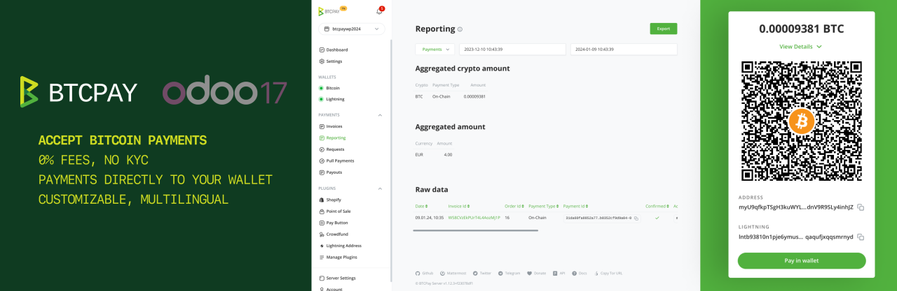
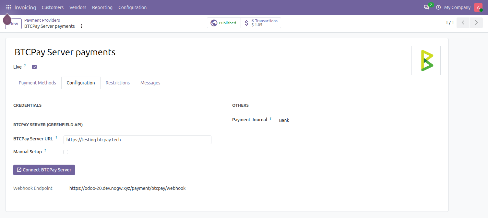
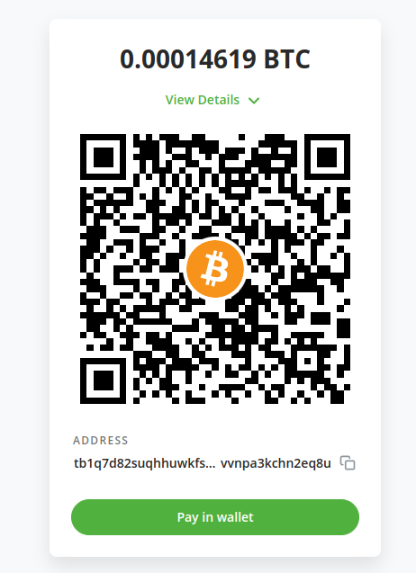
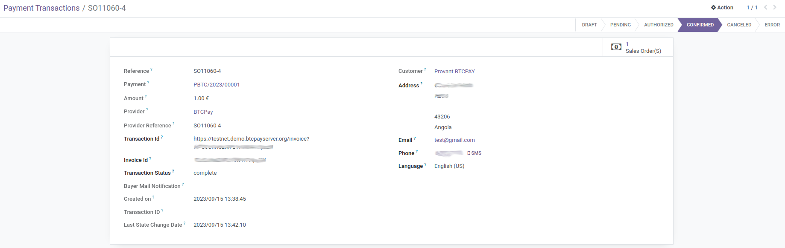

BTCPay Server for Odoo is a revolutionary, self-hosted, open-source payment gateway to accept Bitcoin payments. Our seamless integration with Odoo allows you to connect your self-hosted BTCPay Server and start accepting Bitcoin payments in just a few simple steps.
New in version v20.0.2.x (Odoo 20): the module now uses the modern BTCPay Greenfield API with signed webhooks. Connect your store with the built-in setup wizard — just enter your BTCPay Server URL and click "Connect BTCPay Server". A detailed setup guide and upgrade notes for existing installations can be found in the module documentation.
20.0 or downloaded a release tagged with version v20.xpayment_btcpayserver directory in your Odoo addons directoryThe full installation and configuration instructions — including the setup wizard and upgrade notes for v20.0.1.x installations — are in the module documentation.
A manual setup (API key + store id pasted by hand) is described in the module documentation. Full screenshots of every step are included there as well.


